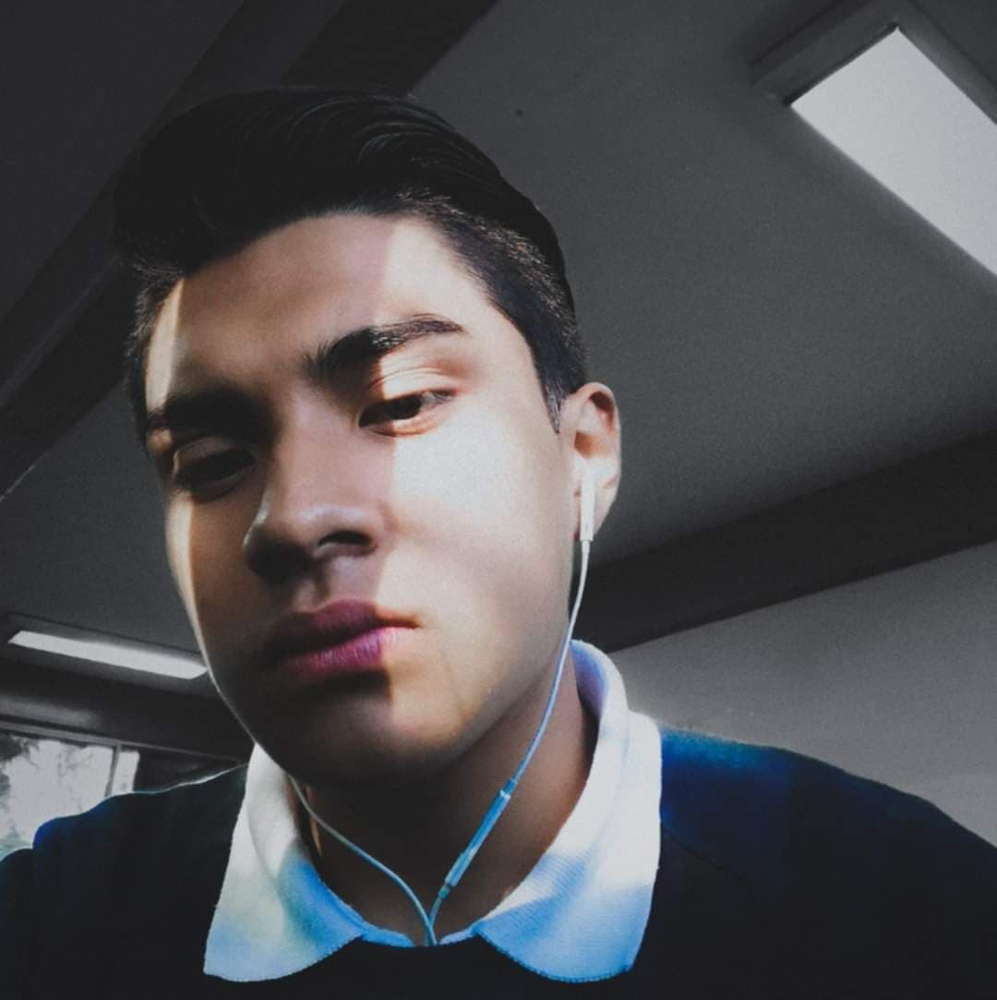
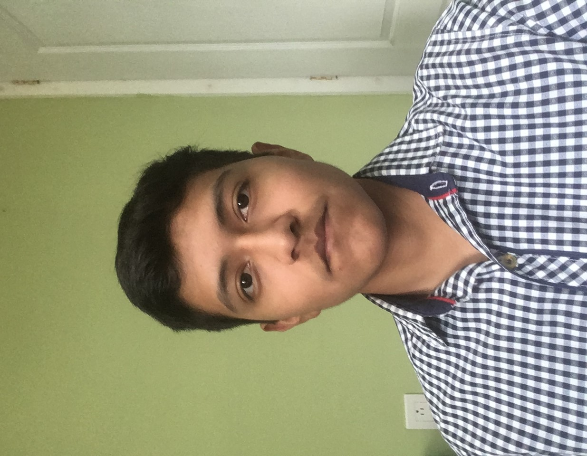
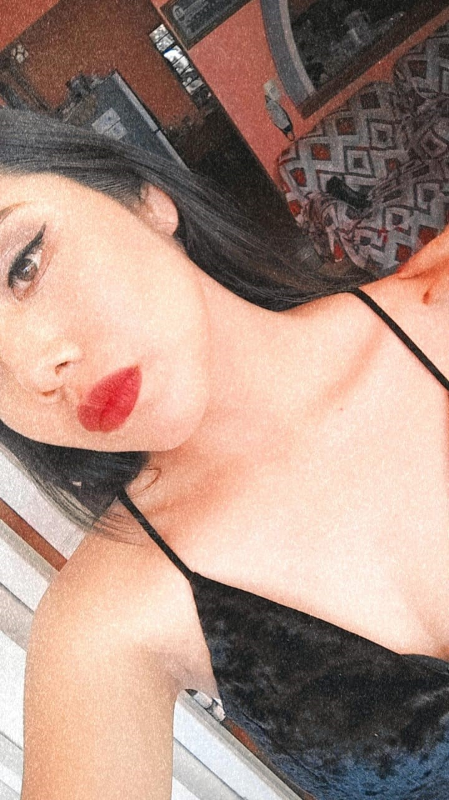
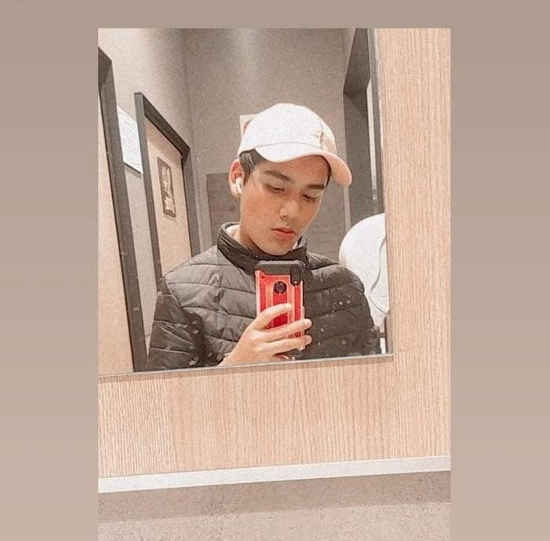

.
Acerca Del Equipo
Somos un equipo que se unio y se fortalecio principalmente durante la contigencia del Covid 19,puesto que desde entonces hemos tenido diversos proyectos que hacer por equipo por ello, surgio una idea y todos los integrantes la conocen llamada la iniciativa vengadores la idea era buscar y reunir un grupo de personas exepcionales y tratar de convertirlas en algo mas, ver si podiamos unirnos cuando necesitaramos librar tareas y proyectos que no podriamos realizar solos, desde entonces nos hemos unido para los proyectos de las distintas materias, no hemos presentado inconvenientes o conflictos entre los integrantes, ya que se tiene una buena relacion de amistad entre todos y cada quien realiza la parte que le corresponde en tiempo y forma por lo que hemos logrado el objetivo de unir nuestros conocimientos para realizar proyectos de la mejor manera posible, siendo asi que es un equipo en el que todos aportan y que siempre esta dispuesto a trabajar, quienes integran este equipo son:
Equipo Mr. Champions (Integrantes)
Jose Yael Rosas Zuñiga

Kevin Jose Gonzalez Morgado

Frida Giovana Cintura Basilio

Hiram Jaasiel Torres Duran

Fundador de Mr. Champions y asociados
Soy Jose Yael Rosas Zuñiga de 4to semestre en programacion, tengo 16 años me gusta la creacion de programas y avances tecnologicos,ademas de escuchar musica.
Me gusta trabajar en equipo para intercambiar ideas y terminar los proyectos de manera mas rapida y con diferentes opiniones de los integrantes.
Me interesa mucho el mundo de la tecnologia e inovacion por lo que decidi estudiar algo acorde a mis gustos y no me arrepiento ya que he logrado aprender mucho gracias a las investigaciones y programas realizados a lo largo de la preparatoria, espero seguir mis estudios con una carrera en sistemas.
Cofundador de Mr. Champions y asociados
Soy Kevin Jose Gonzalez Morgado de 4to semestre y tengo 16 años, me gusta la programacion web y la programacion de videojuegos.
Con cada tema nuevo me gusta investigar mas para hacer con mayor facilidad las tareas y para reducir el tiempo que me toma realizar cada programa.
La ventaja de un buen equipo que trabaja de una manera ordenada y limpia es que las cosas quedan mejor y eso se demuestra en la imagen y por supuesto el funcionamiento de tu pagina.
Cofundadora de Mr. Champions y asociados
Mi nombre es Frida, me considero muy buena en los deportes, actualmente juego en un equipo de futbol femenil que me ha ayudado a mejorar, soy una persona que le gusta el ejercicio y estar bien.
de eso, me gusta mucho todo aquello que tenga que ver con la pintura y el dibujo, tengo muchas metas propuestas, que seria estudiar dos carreras a la vez y entrar a una de las universidades con mayor demanda en Mexico o bien, entrar a falcultades pertenecientes de esas.
Me gusta ser muy responsable con todas mi cosas,a parte de tareas y trabajos, me gusta entregar todo en tiempo y forma sin embargo, hay ocasiones en las cuales puedo abrumarme y desorganizarme, pero siempre buscar las maneras de tener todo en control.
Cofundador de Mr. Champions y asociados
Soy Hiram una persona que le gusta bastante el deporte y tengo muchas metas en vida, me considero demasiado bueno en el estudio y en los deportes una de mis metas a corto plazo es terminar la preparatoria satisfactoriamente y ganar las olimpiadas en las cuales representaré a Orizaba el año que viene en box amateur